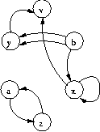
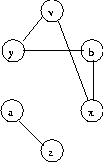
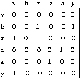
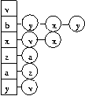
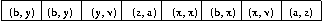
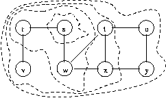
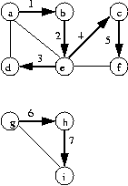
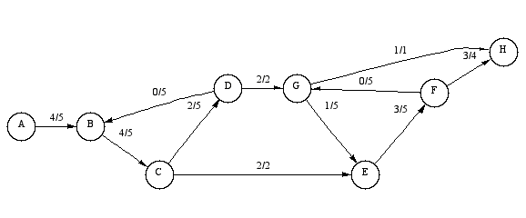
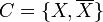

Review of Elementary Graph Theory
This chapter is meant as a refresher on elementary graph theory. If the reader has some previous acquaintance with graph algorithms, this chapter should be enough to get started. If the reader has no previous background in graph algorithms we suggest a more thorough introduction such as Introduction to Algorithms by Cormen, Leiserson, and Rivest.
The Graph Abstraction
A graph is a mathematical abstraction that is useful for solving many kinds of problems. Fundamentally, a graph consists of a set of vertices, and a set of edges, where an edge is something that connects two vertices in the graph. More precisely, a graph is a pair (V,E), where V is a finite set and E is a binary relation on V. V is called a vertex set whose elements are called vertices. E is a collection of edges, where an edge is a pair (u,v) with u,v in V. In a directed graph, edges are ordered pairs, connecting a source vertex to a target vertex. In an undirected graph edges are unordered pairs and connect the two vertices in both directions, hence in an undirected graph (u,v) and (v,u) are two ways of writing the same edge.
This definition of a graph is vague in certain respects; it does not say what a vertex or edge represents. They could be cities with connecting roads, or web-pages with hyperlinks. These details are left out of the definition of a graph for an important reason; they are not a necessary part of the graph abstraction. By leaving out the details we can construct a theory that is reusable, that can help us solve lots of different kinds of problems.
Back to the definition: a graph is a set of vertices and edges. For purposes of demonstration, let us consider a graph where we have labeled the vertices with letters, and we write an edge simply as a pair of letters. Now we can write down an example of a directed graph as follows:
` V = {v, b, x, z, a, y }` |
Figure 1 gives a pictorial view of this graph. The edge (x,x) is called a self-loop. Edges (b,y) and (b,y) are parallel edges, which are allowed in a multigraph (but are normally not allowed in a directed or undirected graph).

Next we have a similar graph, though this time it is undirected. Figure 2 gives the pictorial view. Self loops are not allowed in undirected graphs. This graph is the undirected version of the the previous graph (minus the parallel edge (b,y)), meaning it has the same vertices and the same edges with their directions removed. Also the self edge has been removed, and edges such as (a,z) and (z,a) are collapsed into one edge. One can go the other way, and make a directed version of an undirected graph be replacing each edge by two edges, one pointing in each direction.
` V = {v, b, x, z, a, y }` |

Now for some more graph terminology. If some edge (u,v) is in graph G, then vertex v is adjacent to vertex u. In a directed graph, edge (u,v) is an out-edge of vertex u and an in-edge of vertex v. In an undirected graph edge (u,v) is incident on vertices u and v.
In Figure 1, vertex y is adjacent to vertex b (but b is not adjacent to y). The edge (b,y) is an out-edge of b and an in-edge of y. In Figure 2, y is adjacent to b and vice-versa. The edge (y,b) is incident on vertices y and b.
In a directed graph, the number of out-edges of a vertex is its out-degree and the number of in-edges is its in-degree. For an undirected graph, the number of edges incident to a vertex is its degree. In Figure 1, vertex b has an out-degree of 3 and an in-degree of zero. In Figure 2, vertex b simply has a degree of 2.
Now a path is a sequence of edges in a graph such that the target vertex of each edge is the source vertex of the next edge in the sequence. If there is a path starting at vertex u and ending at vertex v we say that v is reachable from u. A path is simple if none of the vertices in the sequence are repeated. The path <(b,x), (x,v)> is simple, while the path <(a,z), (z,a)> is not. Also, the path <(a,z), (z,a)> is called a cycle because the first and last vertices in the path are the same. A graph with no cycles is acyclic.
A planar graph is a graph that can be drawn on a
plane without any of the edges crossing over each other. Such a drawing
is called a plane graph. A face of a plane graph is a
connected region of the plane surrounded by edges. An important property
of planar graphs is that the number of faces, edges, and vertices are
related through Euler’s formula: |F| - |E|
|V| = 2. This means that a simple planar graph has at most
O(|V|) edges.
Graph Data Structures
The primary property of a graph to consider when deciding which data structure to use is sparsity, the number of edges relative to the number of vertices in the graph. A graph where E is close to V2 is a dense graph, whereas a graph where E = alpha V and alpha is much smaller than V is a sparse graph. For dense graphs, the adjacency-matrix representation is usually the best choice, whereas for sparse graphs the adjacency-list representation is a better choice. Also the edge-list representation is a space efficient choice for sparse graphs that is appropriate in some situations.
Adjacency Matrix Representation
An adjacency-matrix representation of a graph is a 2-dimensional V x V
array. Each element in the array auv stores a Boolean value saying
whether the edge (u,v) is in the graph. Figure 3
depicts an adjacency matrix for the graph in
Figure 1 (minus the parallel edge (b,y)).
The amount of space required to store an adjacency-matrix is O(V2).
Any edge can be accessed, added, or removed in O(1) time. To add or
remove a vertex requires reallocating and copying the whole graph, an
O(V2) operation. The
adjacency_matrix class implements
the BGL graph interface in terms of the adjacency-matrix data-structure.

Adjacency List Representation
An adjacency-list representation of a graph stores an out-edge sequence
for each vertex. For sparse graphs this saves space since only O(V
+ E) memory is required. In addition, the out-edges for each
vertex can be accessed more efficiently. Edge insertion is O(1),
though accessing any given edge is O(alpha), where alpha is the
sparsity factor of the matrix (which is equal to the maximum number of
out-edges for any vertex in the graph). Figure 4
depicts an adjacency-list representation of the graph in
Figure 1. The
adjacency_list class is an
implementation of the adjacency-list representation.

Edge List Representation
An edge-list representation of a graph is simply a sequence of edges,
where each edge is represented as a pair of vertex ID’s. The memory
required is only O(E). Edge insertion is typically O(1), though
accessing a particular edge is O(E) (not efficient).
Figure 5 shows an edge-list representation of the
graph in Figure 1. The
edge_list adaptor class can be used to
create implementations of the edge-list representation.

Graph Algorithms
Graph Search Algorithms
Tree edges are edges in the search tree (or forest) constructed
(implicitly or explicitly) by running a graph search algorithm over a
graph. An edge (u,v) is a tree edge if v was first discovered while
exploring (corresponding to the visitor
explore() method) edge (u,v). Back edges connect vertices to their
ancestors in a search tree. So for edge (u,v) the vertex v must be
the ancestor of vertex u. Self loops are considered to be back edges.
Forward edges are non-tree edges (u,v) that connect a vertex u to
a descendant v in a search tree. Cross edges are edges that do not
fall into the above three categories.
Breadth-First Search
Breadth-first search is a traversal through a graph that touches all of the vertices reachable from a particular source vertex. In addition, the order of the traversal is such that the algorithm will explore all of the neighbors of a vertex before proceeding on to the neighbors of its neighbors. One way to think of breadth-first search is that it expands like a wave emanating from a stone dropped into a pool of water. Vertices in the same ``wave'' are the same distance from the source vertex. A vertex is discovered the first time it is encountered by the algorithm. A vertex is finished after all of its neighbors are explored. Here’s an example to help make this clear. A graph is shown in Figure 6 and the BFS discovery and finish order for the vertices is shown below.

order of discovery: s r w v t x u y order of finish: s r w v t x u y
We start at vertex s, and first visit r and w (the two neighbors of s). Once both neighbors of s are visited, we visit the neighbor of r (vertex v), then the neighbors of w (the discovery order between r and w does not matter) which are t and x. Finally we visit the neighbors of t and x, which are u and y.
For the algorithm to keep track of where it is in the graph, and which vertex to visit next, BFS needs to color the vertices (see the section on Property Maps for more details about attaching properties to graphs). The place to put the color can either be inside the graph, or it can be passed into the algorithm as an argument.
Depth-First Search
A depth first search (DFS) visits all the vertices in a graph. When choosing which edge to explore next, this algorithm always chooses to go ``deeper'' into the graph. That is, it will pick the next adjacent unvisited vertex until reaching a vertex that has no unvisited adjacent vertices. The algorithm will then backtrack to the previous vertex and continue along any as-yet unexplored edges from that vertex. After DFS has visited all the reachable vertices from a particular source vertex, it chooses one of the remaining undiscovered vertices and continues the search. This process creates a set of depth-first trees which together form the depth-first forest. A depth-first search categorizes the edges in the graph into three categories: tree-edges, back-edges, and forward or cross-edges (it does not specify which). There are typically many valid depth-first forests for a given graph, and therefore many different (and equally valid) ways to categorize the edges.
One interesting property of depth-first search is that the discover and finish times for each vertex form a parenthesis structure. If we use an open-parenthesis when a vertex is discovered, and a close-parenthesis when a vertex is finished, then the result is a properly nested set of parenthesis. Figure 7 shows DFS applied to an undirected graph, with the edges labeled in the order they were explored. Below we list the vertices of the graph ordered by discover and finish time, as well as show the parenthesis structure. DFS is used as the kernel for several other graph algorithms, including topological sort and two of the connected component algorithms. It can also be used to detect cycles (use a DFS visitor that checks for back edges).

order of discovery: a b e d c f g h i order of finish: d f c e b a i h g parenthesis: (a (b (e (d d) (c (f f) c) e) b) a) (g (h (i i) h) g)
Minimum Spanning Tree Problem
The minimum-spanning-tree problem is defined as follows: find an acyclic subset T of E that connects all of the vertices in the graph and whose total weight is minimized, where the total weight is given by
w(T) = sum of w(u,v) over all (u,v) in T, where w(u,v) is the weight on the edge (u,v)
T is called the spanning tree.
Shortest-Paths Algorithms
One of the classic problems in graph theory is to find the shortest path between two vertices in a graph. Formally, a path is a sequence of vertices <v0,v1,…,vk> in a graph G = (V, E) such that each vertex is connected to the next vertex in the sequence (the edges (vi,vi+1) for i=0,1,…,k-1 are in the edge set E). In the shortest-path problem, each edge is given a real-valued weight. We can therefore talk about the weight of a path
w(p) = sum of w(vi-1,vi) for i=1..k
The shortest path weight from vertex u to v is then
delta (u,v) = min { w(p) : u -→ v } if there is a path from
u to v
delta (u,v) = infinity otherwise.
A shortest path is any path whose path weight is equal to the shortest path weight.
There are several variants of the shortest path problem. Above we defined the single-pair problem, but there is also the single-source problem (all shortest paths from one vertex to every other vertex in the graph), the equivalent single-destination problem, and the all-pairs problem. It turns out that there are no algorithms for solving the single-pair problem that are asymptotically faster than algorithms that solve the single-source problem.
A shortest-paths tree rooted at vertex r in graph G=(V,E) is a directed subgraph G'=(V',E') where V' is a subset of V and E' is a subset of E, V' is the set of vertices reachable from r, G' forms a rooted tree with root r, and for all v in V' the unique simple path from r to v in G' is a shortest path from r to v in G. The result of a single-source algorithm is a shortest-paths tree.
Network Flow Algorithms
A flow network is a directed graph G=(V,E) with a source vertex s and a sink vertex t. Each edge has a positive real valued capacity function c and there is a flow function f defined over every vertex pair. The flow function must satisfy three constraints:
f(u,v) ⇐ c(u,v) for all (u,v) in V x V (Capacity constraint)
f(u,v) = - f(v,u) for all (u,v) in V x V (Skew symmetry)
sum~v in V~ f(u,v) = 0 for all v in V - {s,t} (Flow conservation)
The flow of the network is the net flow entering the sink vertex t (which is equal to the net flow leaving the source vertex s).
|f| = sum~u in V~ f(u,t) = sum~v in V~ f(s,v)
The residual capacity of an edge is r(u,v) = c(u,v) - f(u,v). The edges with r(u,v) > 0 are residual edges Ef which induce the residual graph Gf = (V, Ef). An edge with r(u,v) = 0 is saturated.
The maximum flow problem is to determine the maximum possible value for |f| and the corresponding flow values for every vertex pair in the graph.
The minimum cost maximum flow problem is to determine the maximum flow which minimizes sum~(u,v) in E~ cost(u,v) * f(u,v) .
A flow network is shown in Figure 8. Vertex A is the source vertex and H is the target vertex.
Edges are labeled with the flow and capacity values.

There is a long history of algorithms for solving the maximum flow problem, with the first algorithm due to Ford and Fulkerson. The best general purpose algorithm to date is the push-relabel algorithm of Goldberg which is based on the notion of a preflow introduced by Karzanov.
Minimum Cut Algorithms
Undirected Graphs
Given an undirected graph G = (V, E), a cut of G is a partition of the vertices into two, non-empty sets X and . The weight of a cut is defined as the number of edges between sets X and if G is unweighted, or the sum of the weights of all edges between sets X and if G is weighted (each edge has an associated, non-negative weight).
When the weight of a cut 
The cut {{0, 6}, {3, 2, 7, 1, 5, 4}} has weight 13:
And the min-cut is {{0, 1, 4, 5}, {2, 3, 6, 7}} (weight 4):
Unlike this example, a graph will sometimes have multiple min-cuts, all of equal weight. A minimum cut algorithm determines one of them as well as the min-cut weight.
Directed Graphs
Given a directed graph G = (V, E), a cut of G is a partition of the vertices into two, non-empty sets S and T where S is known as the set of source vertices and T is known as the set of sink vertices. The capacity of a cut C = (S, T) is the number of edges from a vertex in S to a vertex in T if G is unweighted, or the sum of weights of edges from a vertex in S to a vertex in T if G is weighted.
When the capacity of a cut C = (S, T) of a directed graph is minimal (that is, no other cut of G has lesser capacity), then C is known as a minimum cut or min-cut.
For example, given this directed graph:
A min-cut is:
where S = {0}, T = {1, 2, 3}, and the min-cut capacity is 1.